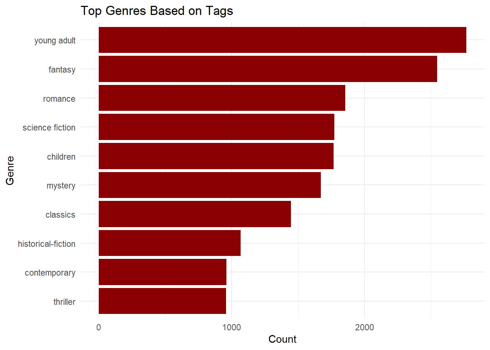
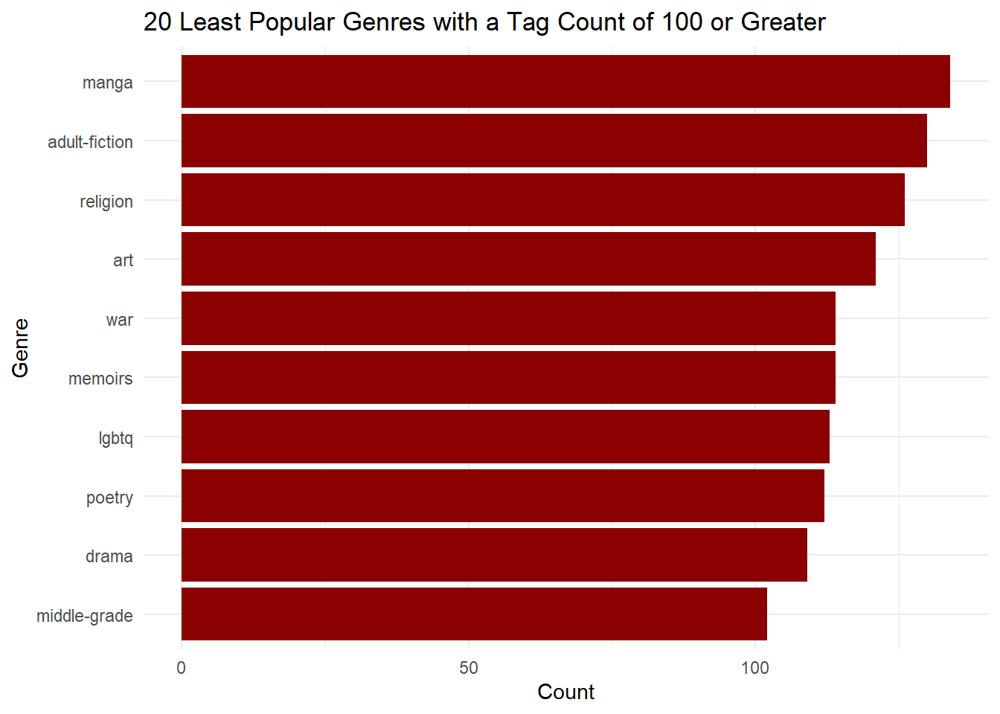
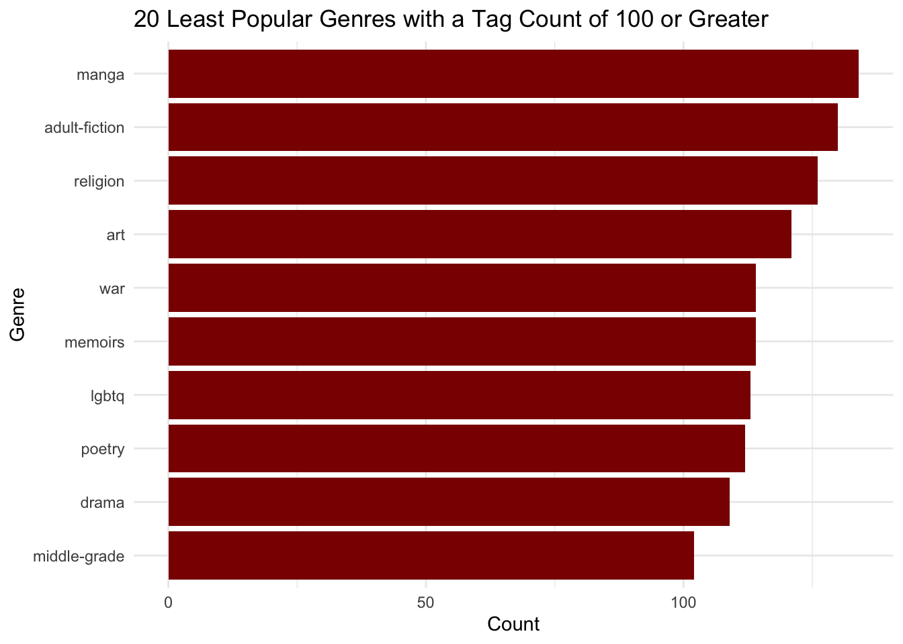

Genres Analysis
Jasmin Martinez
2024-12-03
DATA: Most and Least Popular Genres Read
Importing data to use:
library(readr)
genre_data = read_csv ("books_with_tags.csv", show_col_types = FALSE)Tidying data:
# Load necessary libraries
library(dplyr)##
## Attaching package: 'dplyr'## The following objects are masked from 'package:stats':
##
## filter, lag## The following objects are masked from 'package:base':
##
## intersect, setdiff, setequal, unionlibrary(tidyr)
# Combine all tags into a single column
genre_data_longer = genre_data %>%
select(top_1:top_5) %>% # Select the columns with tags
pivot_longer(cols = everything(), names_to = "tag_type", values_to = "tag")
# remove fiction and nonfiction from genre list
genre_data_longer = genre_data_longer %>%
filter(!tag %in% c("fiction", "non-fiction"))DATA: Most and Least Popular Genres To-Be-Read
Importing data to use:
to_read = read_csv ("to_read.csv", show_col_types = FALSE)
head(to_read)## # A tibble: 6 × 2
## user_id book_id
## <dbl> <dbl>
## 1 9 8
## 2 15 398
## 3 15 275
## 4 37 7173
## 5 34 380
## 6 34 483Tidying data:
# Remove the 'user_id' variable
to_read = to_read %>%
select(-user_id) # Drop the user_id column
# Remove duplicate 'book_id' entries
to_read_cleaned = to_read %>%
distinct(book_id, .keep_all = TRUE)
# Merge to_read dataset with genre_data, on book_id
to_read_merged = to_read_cleaned %>%
inner_join(genre_data, by = "book_id")
# Combine all tags into a single column
to_read_genre_data_longer = to_read_merged %>%
select(top_1:top_5) %>% # Select the columns with tags
pivot_longer(cols = everything(), names_to = "tag_type", values_to = "tag")
# remove fiction and nonfiction from genre list
to_read_genre_data_longer = to_read_genre_data_longer %>%
filter(!tag %in% c("fiction", "non-fiction"))
write_csv(to_read_genre_data_longer, "to_read_with_tag.csv")Exploratory Analysis
Most Popular Genres
# Count occurrences of each tag, in descending order
tag_counts = genre_data_longer %>%
group_by(tag) %>%
summarise(count = n(), .groups = "drop") %>%
arrange(desc(count))
# Display the 10 most popular tags
top_tags = tag_counts %>%
slice_max(count, n = 10)
print(top_tags)## # A tibble: 10 × 2
## tag count
## <chr> <int>
## 1 young adult 2765
## 2 fantasy 2548
## 3 romance 1854
## 4 science fiction 1772
## 5 children 1767
## 6 mystery 1671
## 7 classics 1446
## 8 historical-fiction 1067
## 9 contemporary 960
## 10 thriller 957# Box Graph
library(ggplot2)
ggplot(top_tags, aes(x = reorder(tag, count), y = count)) +
geom_bar(stat = "identity", fill = "darkred") +
coord_flip() +
labs(title = "Top Genres Based on Tags",
x = "Genre",
y = "Count") +
theme_minimal() ### Least Popular Genres
# Filter tags with counts of 50 or greater
filtered_tags = tag_counts %>%
filter(count >= 100)
# Display the least popular genres from the filtered set
least_popular_tags = filtered_tags %>%
slice_min(count, n = 10)
print(least_popular_tags)## # A tibble: 10 × 2
## tag count
## <chr> <int>
## 1 middle-grade 102
## 2 drama 109
## 3 poetry 112
## 4 lgbtq 113
## 5 memoirs 114
## 6 war 114
## 7 art 121
## 8 religion 126
## 9 adult-fiction 130
## 10 manga 134# Box graph
library(ggplot2)
ggplot(least_popular_tags, aes(x = reorder(tag, count), y = count)) +
geom_bar(stat = "identity", fill = "darkred") +
coord_flip() +
labs(title = "20 Least Popular Genres with a Tag Count of 100 or Greater",
x = "Genre",
y = "Count") +
theme_minimal()
Most Popular To-Be-Read Genre
# Count occurrences of each tag, in descending order
to_read_tag_counts = to_read_genre_data_longer %>%
group_by(tag) %>%
summarise(count = n(), .groups = "drop") %>%
arrange(desc(count))
# Display the 10 most popular tags for to-be-read
to_read_top_tags = to_read_tag_counts %>%
slice_max(count, n = 10)
print(to_read_top_tags)## # A tibble: 10 × 2
## tag count
## <chr> <int>
## 1 young adult 2764
## 2 fantasy 2546
## 3 romance 1852
## 4 science fiction 1772
## 5 children 1730
## 6 mystery 1671
## 7 classics 1445
## 8 historical-fiction 1067
## 9 contemporary 960
## 10 thriller 957# Box Graph
library(ggplot2)
ggplot(to_read_top_tags, aes(x = reorder(tag, count), y = count)) +
geom_bar(stat = "identity", fill = "gold") +
coord_flip() +
labs(title = "Top 10 Genres To-Read, Based on Tags",
x = "Genre",
y = "Count") +
theme_minimal()
Least Popular To-Be-Read Genre
# Filter tags with counts of 100 or greater
to_read_filtered_tags = to_read_tag_counts %>%
filter(count >= 100)
# Display the least popular genres from the filtered set
to_read_least_popular_tags = to_read_filtered_tags %>%
slice_min(count, n = 10)
print(to_read_least_popular_tags)## # A tibble: 10 × 2
## tag count
## <chr> <int>
## 1 middle-grade 102
## 2 drama 109
## 3 poetry 112
## 4 lgbtq 113
## 5 memoirs 114
## 6 war 114
## 7 art 121
## 8 religion 126
## 9 adult-fiction 130
## 10 manga 133# Box graph
library(ggplot2)
ggplot(to_read_least_popular_tags, aes(x = reorder(tag, count), y = count)) +
geom_bar(stat = "identity", fill = "gold") +
coord_flip() +
labs(title = "10 Least Popular Genres To-Read, based on tags",
x = "Genre",
y = "Count") +
theme_minimal()